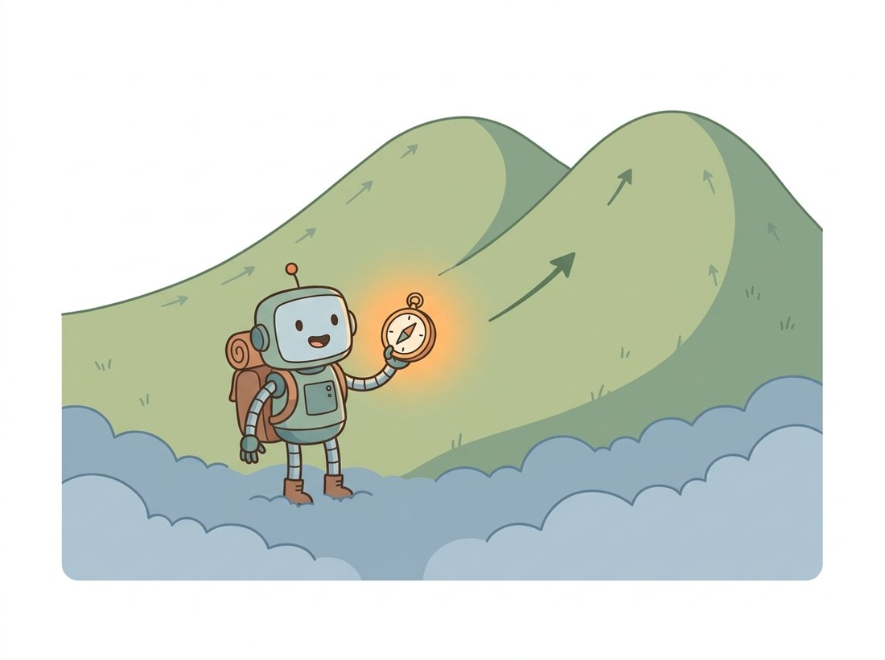

"Tell me which way the density rises and I will climb it forever. That gradient is the only compass I have ever needed, and the only one I ever trusted."
A Score Function Pointing Uphill
Take the discrete DDPM steps to a continuous limit and the forward process becomes a stochastic differential equation; its time reversal is another SDE whose drift contains exactly one unknown quantity, the score of the noisy data distribution, which is the gradient of its log-density and which the denoiser already learns. This continuous view unifies DDPM with score matching from Chapter 30, classifies the design choices into two families (variance-exploding and variance-preserving), and reveals a deterministic twin of the noisy SDE: the probability-flow ODE, which carries the same distribution of samples without injecting any randomness. That ODE is the gateway to the fast samplers of the next section.
The DDPM of Section 33.2 is a discrete chain of $T$ steps. This section asks what happens as $T \to \infty$ and the steps become infinitesimal. If the stochastic calculus on the next few lines looks like a detour into unrelated math, here is the reason to push through: it ends with a small shock. The noise-prediction network you already trained in Section 33.1 turns out to be, up to a single rescaling, the score estimator from Chapter 30; you built two famous models at once without knowing it, and this section is where the disguise comes off.
The plan is to take that one shock apart into three results, each developed in its own subsection. First, the continuous limit turns the forward chain into a stochastic differential equation, and its time reversal contains exactly one unknown, the score function of Chapter 30, which is what reveals that your noise predictor was a score estimator all along. Second, there are two natural ways to set up the forward SDE (variance-exploding and variance-preserving), and naming them lets you read any model's configuration. Third, every diffusion model has a hidden deterministic counterpart, the probability-flow ODE, that the rest of the chapter relies on heavily for fast and reproducible sampling. Take the three in order and the stochastic-calculus notation stays grounded in objects you already built.
1. From Discrete Steps to a Continuous SDE Advanced
A stochastic differential equation describes how a quantity evolves under a deterministic push plus continuous random noise. Written in the standard form, the forward diffusion is
where $f(x, t)$ is the drift (a deterministic vector field pulling the sample somewhere), $g(t)$ is the diffusion coefficient (how much noise is injected per unit time), and $dW$ is the increment of a Wiener process, the continuous-time analogue of adding a fresh Gaussian at each step. The DDPM update from Section 33.2, $x_t = \sqrt{1-\beta_t}\,x_{t-1} + \sqrt{\beta_t}\,z$, is exactly the Euler discretization of such an SDE; in the limit of small steps it becomes a specific $f$ and $g$. The forward SDE is not learned. The whole point is what happens when you reverse it.
2. The Reverse SDE and the Score Advanced
A 1982 result by Anderson states that any forward SDE has a time-reversed SDE, and gives its form explicitly. The reverse of the equation above is
where $p_t(x)$ is the distribution of noisy samples at time $t$ and $d\bar W$ is a reverse-time Wiener increment. Everything in this equation is known except one term: $\nabla_x \log p_t(x)$, the score, the gradient with respect to the image of the log-density of noisy data. This is the same score you met in the energy-based models and score matching of Chapter 30; there it was the gradient that Langevin dynamics climbed, here it is the only unknown standing between us and a generator. If we can estimate the score at every noise level, we can simulate the reverse SDE and turn noise into data. Figure 33.3.1 shows how the forward SDE flattens a structured density into a Gaussian and the reverse SDE, steered by the score, rebuilds it. The illustration below makes the score concrete as a compass that always points uphill toward the data.

For the Gaussian forward process, the score of the noisy distribution has a closed-form relationship to the added noise: $\nabla_x \log p_t(x_t) = -\,\epsilon / \sqrt{1 - \bar\alpha_t}$, where $\epsilon$ is the noise that produced $x_t$. So the noise-prediction network $\epsilon_\theta$ from Section 33.1 and a score network $s_\theta$ are the same object up to a fixed rescaling: $s_\theta(x_t, t) = -\,\epsilon_\theta(x_t, t) / \sqrt{1 - \bar\alpha_t}$. You did not train a new kind of model in this chapter; you trained the score estimator of Chapter 30, just with the clever closed-form corruption that made the targets cheap to compute. This identity is the bridge between the variational view of DDPM and the score-matching view, and it is why both communities ended up at the same algorithm.
2b. VE and VP: Two Ways to Add Noise Advanced
The forward SDE has two canonical instantiations, distinguished by what they do to the total variance of $x_t$.
- Variance Exploding (VE): the drift is zero and the noise scale $g(t)$ grows without bound, so $x_t = x_0 + \sigma(t)\,\epsilon$ with $\sigma(t)$ rising to a very large value. The variance "explodes" because nothing shrinks the signal; corruption is achieved by drowning it in ever-larger noise. This is the formulation of the original score-matching models, the noise conditional score network (NCSN).
- Variance Preserving (VP): the drift shrinks the signal as noise is added, exactly the $\sqrt{1-\beta_t}$ factor of DDPM, so the total variance stays near one throughout. DDPM is the discrete VP SDE.
The two are related by a simple change of variables and produce equivalent models, but they differ in numerical conditioning and in how the noise levels are chosen, which is why a sampler written for one needs care to apply to the other. The EDM framework of Section 33.2 reparameterizes both in terms of a single noise scale $\sigma$, which is the cleanest way to hold them in one head. The practical upshot: when you read that a model uses a "VP schedule" it is a DDPM-style process; "VE" means the NCSN-style explode-the-variance process; and EDM's $\sigma$-parameterization subsumes both.
3. The Probability-Flow ODE Advanced
Here is the result that the rest of the chapter leans on. For every forward SDE there exists an ordinary differential equation, with no noise term at all, whose solution trajectories have the same marginal distributions $p_t(x)$ at every time as the noisy SDE. It is called the probability-flow ODE:
Compare this to the reverse SDE in subsection 2: the score appears again, but the noise injection $g(t)\,d\bar W$ is gone and the score term carries a factor of one half instead of one. Because there is no randomness, this ODE defines a deterministic, invertible map between a noise sample and a data sample. Two consequences make it central. First, deterministic trajectories are smooth, so you can solve them with large, accurate steps using standard ODE solvers, which is the entire basis of fast sampling in Section 33.4. Second, the map being invertible means you can run it forward to encode a real image into its corresponding noise, the foundation of the inversion-based editing you will meet in Chapter 35. The code below solves the probability-flow ODE for the trained 2D denoiser using a simple Euler integrator over the $\sigma$-schedule.
# Deterministic sampling via the probability-flow ODE.
# No noise is drawn inside the loop: at each step we predict x0 from the
# rescaled score, then move to the next lower noise level on a coarse grid.
import torch
@torch.no_grad()
def pf_ode_sample(model, alpha_bars, n=512, steps=50, T=200):
"""Deterministic sampling by Euler-integrating the probability-flow ODE."""
x = torch.randn(n, 2) # start from noise
ts = torch.linspace(T - 1, 0, steps).long() # coarse time grid
for i in range(len(ts) - 1):
t, t_next = ts[i], ts[i + 1]
ab, ab_next = alpha_bars[t], alpha_bars[t_next]
eps = model(x, t.repeat(n)) # eps_theta = score (rescaled)
# predict x0, then move deterministically toward the next (lower) noise level
x0_hat = (x - (1 - ab).sqrt() * eps) / ab.sqrt()
x = ab_next.sqrt() * x0_hat + (1 - ab_next).sqrt() * eps
return x
# samples = pf_ode_sample(model, alpha_bars) # 50 deterministic steps, no torch.randn inside
print("probability-flow ODE: deterministic, ~50 steps instead of 200")pf_ode_sample function integrates the probability-flow ODE deterministically with an Euler step over a coarse 50-point time grid. Unlike the ancestral sampler of Section 33.1, no fresh noise is drawn inside the loop, so the same starting point always yields the same output. This determinism, plus the smoothness of the ODE, is what lets us use far fewer steps; this update rule is exactly DDIM, which Section 33.4 derives.The probability-flow ODE makes a diffusion model into a continuous normalizing flow, the deterministic invertible generators studied separately in the flow literature. For a while the score-based and flow-based communities published in parallel without realizing how close their objects were. The SDE paper's appendix quietly noted the connection, and within a year "diffusion" and "continuous flow" had largely merged into one research conversation. The flow-matching of Section 33.5 is the full reconciliation.
Who: an ML platform team at a media company shipping a generative-image feature, 2024. Situation: their legal group required that every image the product generated could be exactly reproduced from a stored seed and prompt, for audit and takedown purposes. Problem: their initial pipeline used the stochastic ancestral sampler, which draws fresh noise at every step, so even with a fixed seed, framework and hardware differences in the RNG produced slightly different images, breaking reproducibility. Decision: they switched the production sampler to a deterministic probability-flow ODE solver (DDIM, the subject of Section 33.4), which draws randomness only once to form the initial noise and is fully deterministic thereafter. Result: given the same initial latent, the pipeline reproduced byte-stable outputs across machines, satisfying the audit requirement, and as a bonus the deterministic sampler needed only 30 steps instead of the stochastic sampler's hundreds. Lesson: the SDE-versus-ODE choice is not only about speed; the determinism of the probability-flow ODE is a product requirement in any setting that needs reproducibility, and it comes essentially for free.
Hearing that the probability-flow ODE injects no randomness, learners often conclude it must collapse to a single image, or that the stochastic SDE explores the data distribution while the ODE samples only a sliver of it. Neither is true. The theorem behind the ODE is precisely that it shares the same marginal distribution $p_t(x)$ as the SDE at every time, so over many runs the two produce equally diverse, equally on-distribution samples. The determinism is only per trajectory: a fixed starting noise yields a fixed image, but the variety across generations comes entirely from drawing a different initial noise tensor $x_T$, not from the per-step randomness. This is why deterministic DDIM sampling (Section 33.4) does not reduce the range of images a text-to-image model can produce; it just makes each seed reproducible. The per-step noise of the SDE changes the path taken, not the distribution of endpoints reached.
The continuous SDE and ODE framing (Song et al., 2021, arXiv:2011.13456) turned out to be the language in which nearly all subsequent progress was expressed. The EDM design space (Karras et al., 2022) is stated entirely in $\sigma$-space SDE/ODE terms. The flow-matching and rectified-flow methods of Section 33.5 (Lipman et al., 2023; Liu et al., 2023) are about choosing a better probability path and learning its ODE velocity field directly. Consistency models (Song et al., 2023) are defined as learning the solution map of the probability-flow ODE. Even diffusion-based solvers for inverse problems (deblurring, super-resolution, MRI reconstruction in 2023 to 2025) plug a measurement-consistency term into the reverse SDE. If you internalize one idea from this section, make it that the reverse-time SDE and its deterministic ODE twin are the substrate on which the modern field reasons.
Starting from the closed form $x_t = \sqrt{\bar\alpha_t}\,x_0 + \sqrt{1-\bar\alpha_t}\,\epsilon$ and the fact that for a Gaussian $\mathcal N(\mu, \sigma^2 I)$ the score is $-(x-\mu)/\sigma^2$, derive the relationship $\nabla_x \log p_t(x_t) = -\,\epsilon/\sqrt{1-\bar\alpha_t}$ stated in the Key Insight. Explain in one sentence what this means for someone who trained a noise-prediction model in Section 33.1 but now wants a score network.
Using your trained 2D moons model, generate 512 samples twice from the same fixed initial noise tensor: once with the stochastic ancestral sampler of Section 33.1 and once with the pf_ode_sample function above. Overlay both. Confirm that re-running the ODE sampler with the same initial noise reproduces identical points while the stochastic sampler does not, and reduce the ODE step count from 50 to 20 to 10, reporting at what point quality visibly degrades.
Write a short note (one to two paragraphs) explaining the practical difference between the variance-exploding and variance-preserving formulations from subsection 2b. Address: what happens to the magnitude of $x_t$ in each as $t$ grows, why a network trained on VP-scaled inputs would behave poorly if fed VE-scaled inputs without rescaling, and why the EDM $\sigma$-parameterization (referenced in Section 33.2) is a convenient unification. Tie your answer to the normalization-statistics discussion from Chapter 21.